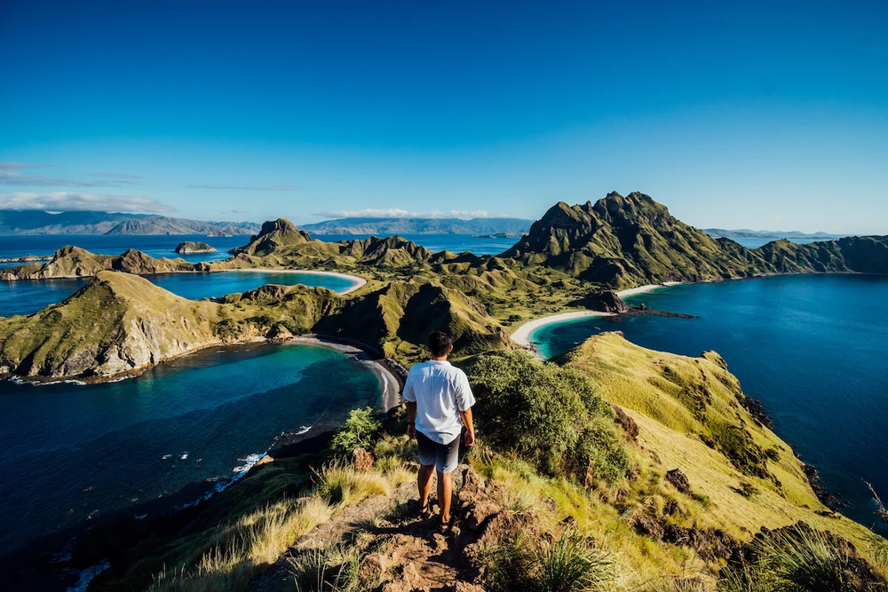
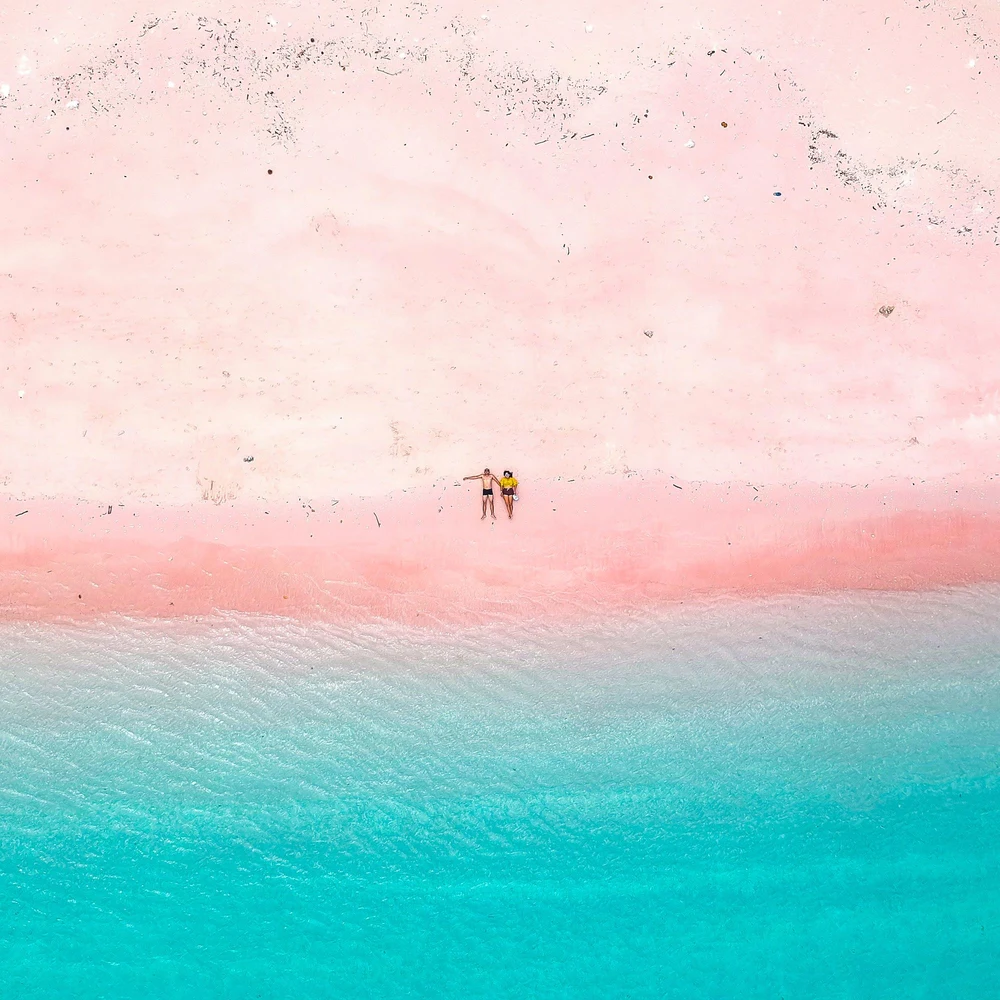
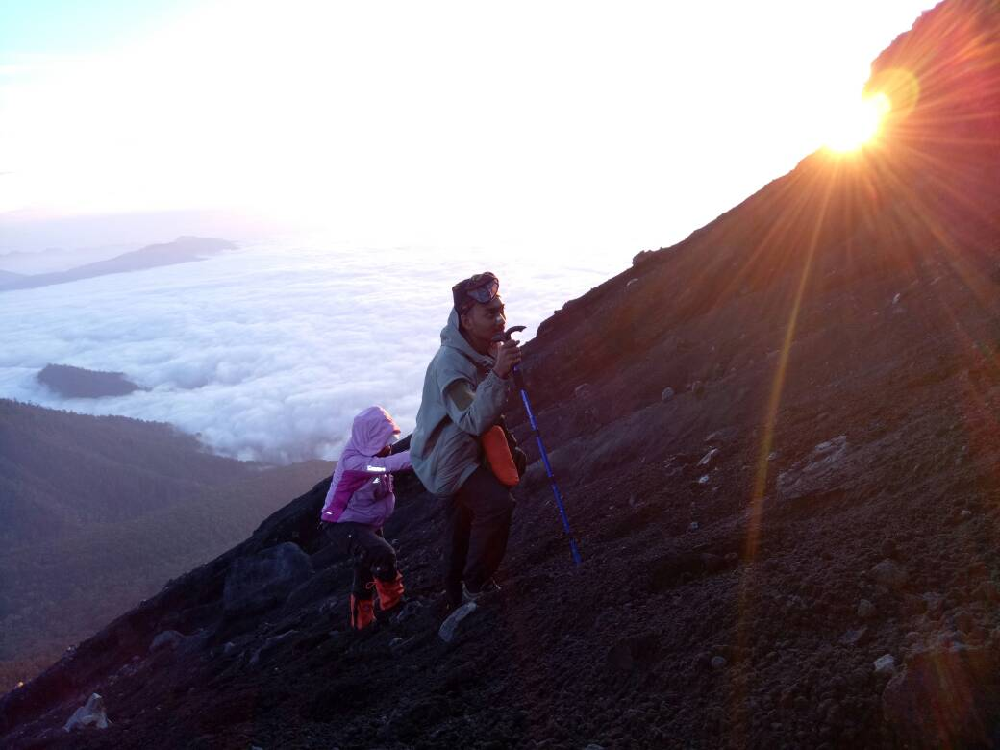
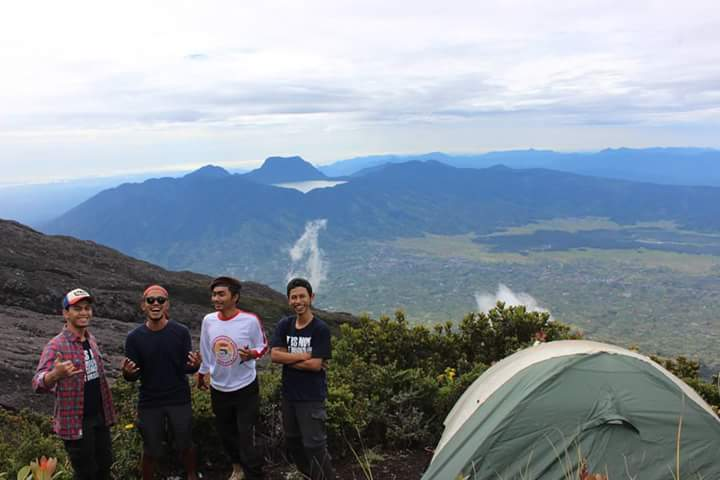
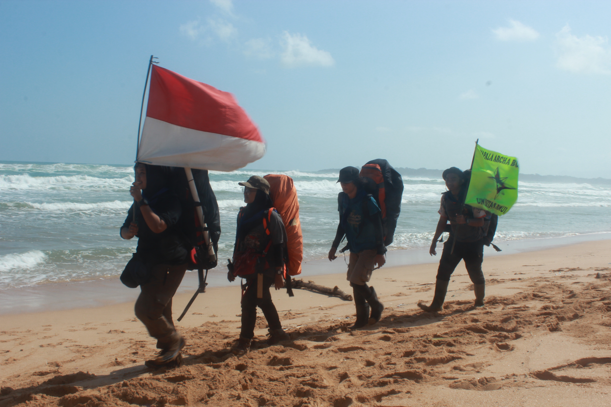

Selamat Datang Di Web Informasi Pariwisata Indonesia
PARIWISATA INDONESIA
Indonesia (pelafalan dalam bahasa Indonesia: [in.ˈdo.nɛ.sja]), dikenal dengan nama resmi Republik Indonesia atau lebih lengkapnya Negara Kesatuan Republik Indonesia, adalah negara kepulauan di Asia Tenggara yang dilintasi garis khatulistiwa dan berada di antara daratan benua Asia dan Oseania sehingga dikenal sebagai negara lintas benua, serta antara Samudra Pasifik dan Samudra Hindia.
Indonesia dikenal sebagai negara dengan banyak banget pemandangan alam yang indah. Mulai dari Sabang sampai Merauke, pemandangan alam indah yang dimiliki Indonesia bisa dibilang tak terhingga. Keindahan alam ini bisa kamu nikmati dari pegunungan yang tinggi maupun lautan yang dalam.
Enggak heran, di Indonesia tempat wisata alam telah menjadi salah satu jenis wisata favorit para wisatawan. Sebab, kamu bisa melihat pemandangan alam indah yang tidak pernah ditemukan di perkotaan. Mungkin 20 tempat wisata dengan pemandangan alam terindah ini bisa kamu masukkan ke list untuk trip berikutnya. Dijamin enggak akan rugi!.
Berikut beberapa tempat favorit wisatawan :- Beach, Nusa Penida
- Pulau Padar, Nusa Tenggara Timur 
- Pink Beach, Pulau Komodo> 
- Gunung Semeru 
- Gunung Kerinci 
- Taman Nasional Ujung Kulon 

Informasi
Open trip adventure diadakan setiap hari dan menyesuaikan tanggal customer.